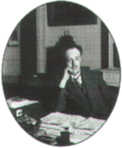
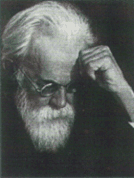

| |
|
1923
 Arthur
Compton, X ýþýnlarýnýn elektronlarla çarpýþmasý
durumunda dalgaboylarýnýn deðiþtiðini belirleyerek
bunun nedenini açýkladý. Bu buluþ, elektromanyetik
dalgalarýn hem dalga hem de parçacýk niteliði taþýyan
ikili yapýsýna iliþkin görüþü doðrulamýþtýr. Arthur
Compton, X ýþýnlarýnýn elektronlarla çarpýþmasý
durumunda dalgaboylarýnýn deðiþtiðini belirleyerek
bunun nedenini açýkladý. Bu buluþ, elektromanyetik
dalgalarýn hem dalga hem de parçacýk niteliði taþýyan
ikili yapýsýna iliþkin görüþü doðrulamýþtýr.
|
| 1924
 Fransýz
fizikçi Louis de Broglie, ýþýðýn hem dalga hem de
parçacýk davranýþý gösterdiðini kanýtlayan
deneysel bulgulardan yola çýkarak, parçacýklarýn da
parçacýk özelliklerine ek olarak dalga özelliklerine
sahip olabileceði düþüncesini ileri sürdü.
|
| 1926
 Rusbilim
adamý Vlademir Vernadski, canlý süreçlerin atmosfere
katkýlarýný inceledi ve atmosferdeki azot, oksijen ve
karbon dioksiksitin canlýlarca üretildiðini belirledi.
Biyosfer kavramýný ortaya atan da Vernadskidir. |
| 1927
George
Paget Thomson, bir elektron demetinin kristal yapýlý bir
maddeden geçerken kýrýnýma uðradýðýný belirledi.
Böylece Louis de Broglie'nin, bir parçacýðýn, Planck
sabitinin parçacýk momentumuna bölünmesiyle elde
edilen dalgaboyunda bir dalga davranýþý göstereceði
yolundaki öngörüsünü doðruladý. |
| 1927
Sesli
sinema filmi yapýldý. 1895 yýlýnda Lumiere kardeþlerin
ilk filmi göstermelerinden beri sessiz sinema gündemdeydi.
1927'den sonraysa sessiz filmler yerlerini yavaþ yavaþ
sesli filmlere býraktýlar. |
|
| 1923
Ýsviçreli
psikolog Jean Piaget, çocuklarýn derslerde yaptýðý
yanlýþlarýn geliþigüzel olmadýðýný, belli yaþ
gruplarýnda özgün yanlýþlarýn yapýldýðýný
ortaya koydu. Böylece çocuðun yetiþkinliðine deðin
bir dizi zihinsel geliþim evresinden geçtiði sonucuna
ulaþtý. |
| 1925
Alman
fizikçi Werner Heisenberg, kuantum mekaniðinin matris
biçimini geliþtirdi. Heisenberg tutulduðu saman
nezlesi nedeniyle dinlemeye çekildiði Helgoland adasýnda,
harmonik olmayan salýnýcýda kesikli enerji durumlarýnýn
açýklanmasýyla ilgili bir problemi çözerek atomun
kuantum mekaniðinin geliþtirilmesine yönelik programlý
araþtýrýlmalarýn baþlangýcýný oluþturdu. |
| 1926
bilim
adamý Robert Goddard ilk baþarýlý roket deneyini gerçekleþtirdi.
Massachussets'e baðlý Auburn kenti yakýnlarýnda bir
çiftlikte gerçekleþtirdiði deneyde, Goddard'm bir
rampadan ateþlediði sývý yakýtlý roket 30 m yükseldi
ve 2,5 saniye havada kalarak 60 metre yol aldý.
|
| 1927
Büyük
patlama kramý ortaya atýldý. Belçikalý gökbilimci
Georges Lemaître'in ortaya attýðý kurama göre evren
baþlangýçtaki bir "süperatomun" genleþmesi
sonucu oluþmuþtur. Bu kuram sonradan George Gamov
tarafýndan geliþtirildi.
|
| 1928
C
vitamini keþfedildi. Özellikle uzun gemi yolculuklarýnda
ortaya çýkan Ýskorbit hastalýðýnýn tedavisinde C
vitaminin etkili olduðu anlaþýldý.
|
|
|